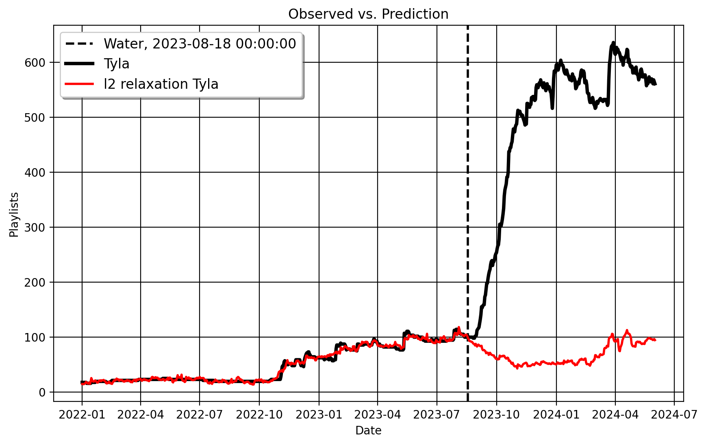

Synthetic Controls in Dense Settings: the \(\ell_2\) relaxer
Plenty of posts have been done in the last decade on the synthetic control method and related approaches; folks from Microsoft, Databricks, Uber, Amazon, Netflix, Gainwell Technologies, and elsewhere have gone over it, detailing different aspects of the method. Many (not of course not all) of these go over the standard SCM. Broadly, the original SCM tends to favor, under certain technical conditions, a sparse set of control units being the underlying weights that reconstruct the factor loadings/observed values of the treated unit, pre-intervention. And while sparsity has plenty of appealing properties, such as our ability to interpret the synthetic control, sometimes this advice simply breaks down because in some cases the sparsity notion is wrong. In other words, most of the coefficeints being 0 is a notion that cannot be defended. So in this post, I demonstrate the \(\ell_2\) panel data approach, an econometric methodology very recently developed by Zhentao Shi and Yishu Wang which accommodates a dense data generation processes, or when the true vector of coefficient is mostly not zero. The Python code for these results may be found here.
Note:
This post goes over an extended empirical example. To see the simple and fast way to use this method, you can go to the Python documentation of this method in my packiagemlsynthwhich is both slightly more technical and a lot shorter than I’ll be here.
A Review of Synthetic Controls
Let \(t \in \mathbb{N}\) and \(i \in \mathbb{N}\) be the time unit indices for our outcomes, \(y_{it}\). Let \(i = 1\) represent the treated unit, and let the remaining units, \(N_0\) in total, form the control group, which remains untreated. The key challenge of causal inference is that we only have factual outcomes, which are defined as \(y_{it} = y_{it}^1 d_{it} + \left(1 - d_{it}\right)y_{it}^0\), where \(d_{it}\) is an indicator for whether the unit is treated (\(d_{it} = 1\)) or untreated (\(d_{it} = 0\)). An intervention occurs after time \(T_{0}\), such that set \(\mathcal{T}\_{1} = \\{1, 2, \ldots, T_0\\}\) corresponds to the pre-treatment period, and set \(\mathcal{T}\_{2} = \\{T_0 + 1, \ldots, T\\}\) corresponds to the post-treatment period. Denote \(\mathbb{I} := \{ w \in \mathbb{R} : 0 \leq w \leq 1 \}.\) The objective is to estimate the counterfactual \(y_{1t}^0\) for the post-treatment period, or the values we would see if the treatment did not happen.
The original SCM proposes to use least-squares regression to estimate the weights, \(\mathbf{w} \in \mathbb{I}^{N_0}\) subject to \(\lVert \mathbf{w} \rVert_1 = 1\). Here, the Individual columns of the donor pool matrix, denoted like \(\mathbf{Y}_0 \in \mathbb{R}^{N_0 \times T}\), are our independent variables which are multiplied by their respective weights and then added (in matrix math we’d call this the dot product). Naturally, the pre-treatment outcome vector of our treated unit, \(\mathbf{y}_1 \in \mathbb{R}^{1 \times T}\), is the dependent variable. A good synthetic control satisfies \(\mathbf{w}^\top \mathbf{Y}_0 \approx \mathbf{y}_1\), or good pre-treatment fit with respect to the treated unit vector.
\(\ell_2\) Relaxation
The \(\ell_2\) relaxation estimates the model \(\mathbf{y}_1 = \boldsymbol{\alpha}+ \mathbf{Y}_0\mathbf{w}+\mathbf{\epsilon}\), where \(\boldsymbol{\alpha}\) is some unconstrained intercept we estimate after solving for the weights. The main innovation with \(\ell_2\) relaxation is the way Zhentao and Yishu propose to estimate the weights, which I think is pretty ingenious. They essentially advocate to literally exploit the pre-treatment relationships between the treated unit and donor pool, and the relationships between the donors themselves. Here is the optimization:
\[\begin{split} \begin{aligned} &\min_{\mathbf{w}} \frac{1}{2} \|\mathbf{w}\|_2^{2}, \quad \forall t \in \mathcal{T}_{1}, \quad \text{subject to } \|\mathbf{\eta} - \mathbf{\Sigma} \mathbf{w}\|_\infty \leq \tau \\ &\mathbf{\eta} = \frac{1}{T_1} \mathbf{Y}_0^\top \mathbf{y}_1 \quad \mathbf{\eta} \in \mathbb{R}^{N_0 \times 1}, \\ &\mathbf{\Sigma} = \frac{1}{T_1} \mathbf{Y}_0^\top \mathbf{Y}_0, \quad \mathbf{\Sigma} \in \mathbb{R}^{N_0 \times N_0}. \end{aligned} \end{split}\]Underneath the scary matrix algebra, we have two terms to focus on here (technically three if we count the tuning parameter): eta (\(\boldsymbol{\eta}\)) and sigma (\(\boldsymbol{\Sigma}\)). The first term simply is a projection which measures the relation between treated unit and each of the control units. The greater the absolute value of the number, the more/less similar the donor is to the treated unit. The latter is the same, except for the control group, capturing how similar the control units are to each other. The optimization itself just finds the values of beta that bound the infinity norm (or, the maximum absolute value) of the difference between these two, such that the difference is below some constant, tau \(\tau\). As for the weights themselves, they are shrank towards zero, but never actually equal 0. The weights may be any real number.
Critical to this process is the selection of tau. In the original paper, the authors do a 70-30 train test split over the pre-intervention period, where they take the first 70% of the pre-treatment data and supply some values of tau. Then, the next step is to estimate the regression model run the optimization and calculate out-of-sample validation predictions up until time point \(T_0\). We then check the RMSE of the validation error across all these values of tau and select the value of with the lowest validation RMSE. A lower tau corresponds to an estimator closer to pure least squares, and too high a value of tau results in drastic underfitting (trust me). The way mlsynth does this, however, is by splitting the pre-treatment period in half, but the performance is pretty close to what Zhentao and Yishu do for their empirical example (see the code at the documentation).
\(\ell_2\) relaxation offers a counterfactual prediction for dense settings. Oftentimes, a sparse model is too simplistic, especially in settings where we have very many predictors. This is especially true when we have lots of multicollinearity among our predictors (our donor pool in this case), which may be very plausible in settings with a lot of control units. The LASSO and the convex hull SCM generally struggle with this, whereas the Ridge or \(\ell_2\)-relaxer accomodate multicollinearity as a feature. Okay, now with that out of the way, let’s apply this to two real-life empirical examples, shall we?
Implementing \(\ell_2\) relaxation in mlsynth.
In order to get these results, you need Python (3.8 or greater) and mlsynth, which you may install from the Github repo.
$ pip install -U git+https://github.com/jgreathouse9/mlsynth.gitI taught Policy Data Analysis last semester at Georgia State. It was an undergrad course, but I still wanted to cover a little bit of causal infernece, not because they will all go on to be grad students or policy researchers, but because the causal mindset is such an important part of how we think about and interact with the world. We managed to get through Difference-in-Differences, after we covered regression and basic stats. The very final topic we covered on the very last day of class was SCM. I prepared for class as I usually do, by playing music. The lyics were in Zulu, so I did not expect anybody who was not South African or a fan of Tyla to know the song, which they did not when I asked them. I then played Tyla’s song “Water”, the one that went viral in 2023, which everybody knew about when I asked.
I used this to transition into the lecture for the day. “Oftentimes,” I began, “we are concerned about the impact of specific events or interventions. As we’ve discussed, the DID method does this on a parallel trends assumption, or that absent the intevention, the trends of the treated group would, on average, move the same as the control group. But what do we do if this breaks down? What if we cannot get parallel trends to hold, for some reason? All semester, we’ve discussed academic examples, but I want to show you how this may look in a semi-real life setting. So the question we wish to answer here is”How would Tyla’s musical success have looked absent her going viral?” Maybe she would’ve made it big anyways, but how can we tell?”
Plotting Our Data
Note:
These data are freely available from my Github and can be viewed at a dashboard on Streamlit. They were scraped together using Python- the code for this scrape is private though. Someday, I may do a blog post employing a simple example of how I scraped it together, since public policy scholars can take advantage of scraping for their own purposes.
Before we get into the fancy estimation though, let’s just plot our data. These daily data come from Songstats, a platform which keeps data on Spotify and Apple (and lots of other sources) music/interaction trends. For example, here is Tyla’s Apple performance and the same for Spotify. For Spotify, the metric is “Playlist Reach” which Songstats defines as
The combined follower number of all Spotify playlists with 200+ followers your music is currently on.
I keep the data from Janaury 1 2023 to June 1 2024. There are 59 donors in the Spotify data, after we drop artists with unbalanced panel/missing data. For Apple, our metric is “Playlists”, which Songstats defines as
The total number of distinct playlists your music has ever been on.
These data are collected from January 1 of 2022 to June 1 2024. Also, not all artists had complete data, so I kept only the artist who were fully observed over the course of the time series. This means there are 24 donors for Apple, yet this could easily change assuming I began the training period with the same time point as the Spotify data.
I normalized all the metrics to 100 at August 17, 2023, a few days before the treatment occured (Tyla performing in Kigali, Rwanda). Zhentao and Yishu recommend mean-standardization and then backing out the coefficients in the paper, but I haven’t programmed this for the \(\ell_2\) PDA just yet. Either way, I think it helps us to see what’s going on in better detail when we normalize the outcome trends as we see here, since now we’re practically comparing everybody in terms of relative trends. The plot says that Tyla generally had less relative popularity compared to the donors for the majority of the time seies pre treatment. We can see both her metrics balloon in the post-intervention period. We can also see quite clearly that parallel trends with respect to the donor pool likely does not hold; the trend of the average of controls is quite flat relatve to Tyla’s.
Songstats Spotify
I begin with the Spotify data. When we estimate the \(\ell_2\) relaxer, comparing Tyla to her 59 controls, we get the following plot (note the red line is the counterfactual Tyla, or how her Playlist Reach would look absent her going viral) :
/opt/hostedtoolcache/Python/3.10.16/x64/lib/python3.10/site-packages/cvxpy/problems/problem.py:1481: UserWarning: Solution may be inaccurate. Try another solver, adjusting the solver settings, or solve with verbose=True for more information.
warnings.warn(
| | Metric | Value |
|---:|:--------------------|:-----------------------------------------------------------------|
| 0 | ATT | 1325.835 |
| 1 | Standard Error | 76.59708007821426 |
| 2 | t-stat | 294.25658232644037 |
| 3 | Confidence Interval | (np.float64(1175.0739327938988), np.float64(1476.5960672061012)) |
| 4 | RMSE (T0) | 5.226 |
| 5 | R-Squared | 0.978 |<Figure size 1000x550 with 0 Axes>Songstats Apple
Here is the same plot with the Apple data, where the outcome is Playlist Count:

| | Metric | Value |
|---:|:--------------------|:----------------------------------------------------------------|
| 0 | ATT | 412.589 |
| 1 | Standard Error | 22.423240653018407 |
| 2 | t-stat | 312.80104015901196 |
| 3 | Confidence Interval | (np.float64(368.4547890403085), np.float64(456.72321095969147)) |
| 4 | RMSE (T0) | 4.343 |
| 5 | R-Squared | 0.982 |<Figure size 1000x550 with 0 Axes>This is unsurprising, and the practical results speak for themselves. Going viral clearly contributed a lot to Tyla’s success across both platforms, as the estimated counterfactuals spell out very plainly that her reach would be a lot flatter compared to what it in fact was/is. As we know from the above, every artist in the donor pool contributes to Tyla’s synthetic control, and the \(\ell_2\) relaxer will not run ito problems of multicollinearity as LASSO might in higher dimensions. This method can also be used with multiple treated units, but I haven’t written this just yet.
Caveats
There are a few caveats to this, though:
- For one, these aren’t raw Spotify or Apple data, so there’s certainly measurement error in these metrics. For some reason, Songstats aggregates their data funny, only having, for example, Playlist Reach data for Rihanna going back to 2023, which is unusual given how popular an artist Rihanna is. Presumably, there’s plenty of noise and corruption in these metrics, so it would be cool to see how this model would play with real Spotify data (or other streaming metric quasi-experiments).
- Secondly, the donor pool is kind of small. Songstats latent API that I used to collect these metrics isn’t really built to grab many artists en masse; I’m sure it’s possible with a little Selenium work to get data on a substantial number of artists (all of it rests on collecting the unique artist ID’s, for example Tyla’s is: 7ln14gwj), but I was much too lazy to do that. So in theory, it would be possible to add many more artists to this dataset to see how the estimator plays when there are truly 4 or 500 artists to work with, in some sense.
Either way, this is how to use the \(\ell_2\) relaxer to estimate causal impacts for treated units. Check our Zhentao and Yishu’s paper for the technical econometric theory and justification. And, you know where to find me should you have questions.